don`t worry, Be Happy !

|
|
don`t worry, Be Happy !
|
|
|
29, 30, 1 мая 2006. Белый Иркут, Мунку-Сардык
Суббота 29.04.06 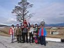 Потом начались горы, между ними Иркут, всякие речки с интересными названиями, пограничный пост, рядом позная, потом мост через Белый Иркут. Нырнули под мост и стали думать, где же ставить палатки – сразу под мостом или протопать-проехать немного вверх по реке. Решили встать выше, там и дует меньше и уютнее, чем возле моста. Встретил Леху Пестова, который в этом районе уже с 22 апреля, ходил с друзьями в маршрут по горам массива Мунку и теперь ждет свою доску с приезжающими друзьями, дабы раскатать офигенный кулуар с какого-то перевала. Объяснил, где и как найти его палатку, а также Вову Языка, который заехал с Тимоном, Ромой, Антоном и Ксюхой. 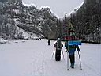 А я подумал, что пора сходить на разведку, на стрелку Мугувека и Белого Иркута, до которой по словам Лехи минут 40 налегке. Сходили в составе меня, Ани и Сереги Сирина. Удивились большому каньону с разнообразными по составу и цвету стенками, в стенках всякие пещеры, одна стенка вся черная, почти вертикальная и супер гладкая. На указанном месте обнаружили Дроновых, Языка и прочих знакомых человеков. Присмотрели место под палатку и двинули обратно за вещами. Я выпросил у Ксюши доску и, хотя стойка на моя, довольно быстро скатился вниз по утоптанной тропище. Наши слюдянцы устроились внизу довольно комфортно и начали культурно отдыхать. Валентина не поддалась на провокацию ночевать на стрелке, и мы опять втроем собрали вещи и палатку и двинули опять вверх. Палатка переместилась на сноуборде в упакованном виде на стрелку, где распаковалась и встала на косогоре, от перекоса не спасло наличие скудного снега, ночью будем сползать ногами к двери, это не хорошо. Ну да ровнее места не будет, для начала прокатит и так. На ужин угостились гречкой с тушенкой, которую сварила кудесница Ксюша. 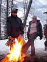 Воскресенье 30.04.06 Ночевка на кривом месте – хуже не бывает, всю ночь приходилось ворочаться и лезть вверх. Встаем пораньше, разводим костер, варим чай и завтрак. Сегодня на вершину собираются Антон и Ксюша, они полностью заряженны кошками и ледорубами, а мы единственную пару кошек забыли в нижнем лагере у слюдянцев! Договорился с похмельным Тимоном насчет его борда, по рассказам бывалых с озера можно доехать до стрелки. Однако доски не было на месте и Тимон вспоминает, что вчера спьяну кому-то дал борд доехать вниз, а его так и не вернули. Ругайся матом, не ругайся, а доски нет, ну и ладно, схожу пешком и налегке. У меня даже рюкзачка не было вещи и термос сложить, взял один сникерс в карман, да палочки в руки. Сергей взял самодельные кошки, однако я бы на них не рассчитывал, уж очень они топорные, плюс одна палочка от Ани, вот и вся его снаряга. Аня взяла Ксюшину доску и одела ее ботинки в надежде катануть с озера. 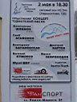 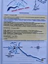 Нагнал своих. Точнее только Аню, так как Сергей уж очень резво стартанул вверх по заснеженным ледяным порогам Могувека. Эти пороги взяли Аню на испуг и она решила, что ходить туда с доской и кататься от туда опасно для организма, посему покатила обратно. Ну а я попытался догнать Сергея, но получилось только перегнать Антона и Ксюшу. Налегке с палочками идти одно удовольствие, ледяные пороги благодаря снегу проходятся легко, солнце в шар не бьет, потому как за облаками, вершины тоже сначала были за облаками, но после первого подъема понемногу проявились и дали себя сфотографировать. 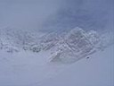 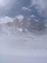 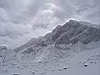 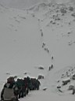 А народ все идет и идет цепочкой по тропе, ведь сегодня день восхождений. После первого подъема – долинка-плоскотинка, потом опять подъем, после которого опять долинка-плоскотинка уже без признаков растительности. Я по наивности думал, что уже и пришел на озеро, однако народ, позвякивая кошками, устало, с перерывами на отдышку, присаживаясь и падая от усталости, штурмует последний третий подъем, который кажется выше и круче. Все это действо начинается и происходит в облаках-тумане, и навевает ассоциации с подъемом рабов-каторжников на какую-то галгофу :) 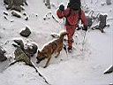 Катальных мест совсем немного. Часть последнего подъема можно прокатить вдали от камней, да потом чуток, с риском нарваться на камень под снегом. Вдоль тропы в долинках стоят палатки и у меня закрадывается мысль на следующий год подняться выше стрелки, пожить в высокогорье, штурмануть Вершину, покататься. Планы-планы... По тропе стали появляться сноубордисты и лыжники, наверное долго спали после вчерашнего. Встретил Диму Алексеева в новых самосшитых штанах. Он поведал страшную историю о вчерашнем катании по камням и показал страшную царапину на скользяке, аж до дерева. Решили, что тут снега для катания точно мало, или мы просто не знаем, где его много. Посоветовал катануть возле последнего подьема и пошел к своим палаткам. 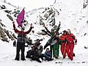 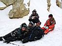 Времени еще до ночера оставалось много, погода хорошая. Серега вернулся усталый-голодный-довольный, зашел таки на вершину! Правда весь обгорел и ничего толком не разглядел сверху из-за облаков. У меня еще больше разгорелось желание завтра сходить на верх. А пока взяли с Аней доски и двинули вверх от стрелки по Белому Иркуту, где по словам катального народа можно было покататься. Спуск по самой реке конечно из разряда хорошего-экстремального – лед, мокрый снег, лужи, каменюги, бревна, пороги, все это конечно проезжаемо, но при наличии мастерства, которое неплохо показал пролетевший лихо вниз доскер. На него я и постараюсь ровняться при спуске, однако посмотрим, к чужой доске тоже привыкнуть надо. Аню все эти экстримы просто в шок повергли, ну да дальше как-то стало поровней, а эти ужасы можно и пешком пройти. Дальше было не только ровнее, но и обнаружились неплохие
заснеженные склоны по обе стороны реки, правда раскатанные в хлам. Далее
виднелась гора Обзорная. Где-то рядом был кулуар, где народ катальный
вчера здорово повредил досочки и лыжики. Чужая досочка, немного побрыкиваясь, все же мало-помалу покатила после крутого склона по раскисшей тропе. Аня немного отставала, но катуха была и это радовало! Попрыгав и попадав на порогах, доехал до стрелки с одним ушибом. А на стрелке Дима достраивал вчерашний кикер, с которого прыгали он и малолетние лыжники на забаву народу и фотографам. Она поехала вниз до Березового ручья, а я заехал в лагерь за фотиком, потому как горы на закате выглядели потрясающе. Перед лагерем на тропе была глубокая лужа, которая с криком «Банзай!» была успешно пересечена. Что-то дорога до Березового оказалась долгой, а еще надо же подниматься. А что делать, поднялись, лихо катанули, даже немного целины отхватили. И потащились обратно на стрелку. В лагере у костра нам была предложена курица с пюре, однако пока мы переодевались и согревались перцовкой в палатке, все уже скушали. Ну да ладно, сварили себе чего-то, выпили с народом за восхождение, поужинали, посидели весело у костра да и завалились спать пораньше. Серега ушел в нижний лагерь, как оказалось позже - в надежде уехать с кем-то в Слюдянию пораньше. Лешка перетащил свои вещи в наш лагерь, ночевал в нашей палатке. Завтра он и Вова хотят с нами уехать... ... окончание дальше ... |
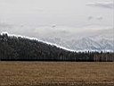 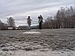 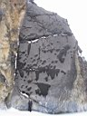
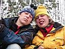 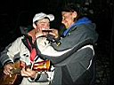 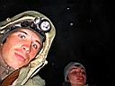 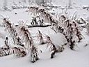 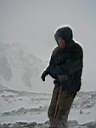 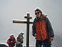 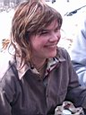
НЕБО-ГОРЫ-ОБЛАКА |